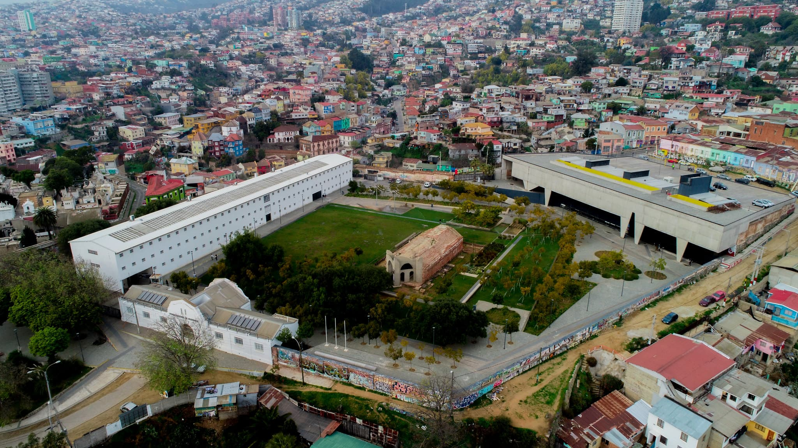

Historia
El Parque Cultural de Valparaíso – Ex Cárcel es una de las infraestructuras culturales más importantes de la Región de Valparaíso, inaugurado oficialmente en 2011, en 2019 fue declarado Sitio de Memoria por el Estado de Chile.
Este espacio público cuenta con áreas verdes y un mirador con una vista privileged hacia los cerros y la bahía. Alberga dos monumentos nacionales y dispone de un equipamiento de primer nivel para el fomento de diversas disciplinas artísticas. Es, además, un punto de encuentro ciudadano y de participación cultural que promueve la convivencia.
El Parque Cultural es más que un lugar para observar, presentar y vivir las artes; su uso experiencia que sitúa al público y a las comunidades en un Sitio de Memoria de alto valor histórico, tanto por su patrimonio material como por la memoria del recinto.
Su propósito es conectar con las nuevas ciudadanías para responder a las transformaciones que demanda la sociedad actual a través de profundos desafíos culturales. La transformación en parte de su propia identidad lo que hoy es el principal recinto cultural de la región, en el pasado fue una cárcel. Hoy, a más de diez años de su apertura, se consolida como sitio de memoria, centro cultural y espacio público de vocación regional, vinculándose con la comunidad desde tres ejes interrelacionados: espacio patrimonial, el artístico y el territorial.

Misión
Somos un sitio de memoria, centro cultural y espacio público, con vocación regional, que promueve la participación cultural y los derechos humanos, para la construcción y formación de ciudadanías críticas.
Visión
En el año 2026 seremos un referente de la participación cultural y del fomento de las culturas, las artes, el patrimonio y los derechos humanos.
Nuestros valores
- Diálogo y promoción de derechos humanos para con las diversas comunidades e instituciones artísticas, culturales y sociales con las que convivimos.
- Promoción de una gestión sostenible del conjunto urbano-histórico y sitio de memoria, integrada a la vocación artística y territorial.
- Construcción de una cultura democrática, inspirada en principles de solidaridad y educación, transversales al quehacer del espacio.
- Compromiso con la igualdad de género y la inclusión de personas de diferentes géneros, nacionalidades, generaciones, culturas, diversidades funcionales, habilidades y conocimientos, religiones, entre otros.
- Trabajo colaborativo, para fortalecer los procesos de participación y desarrollo cultural, local y regional.
- Respeto sobre los principios de diversidad cultural y social y promoción de las diferentes identidades culturales regionales.
- Impulso a una convivencia ecosocial sostenible, que proyecte los entornos que habitamos.
- Transparencia y probidad, que permitan construir confianza y nuevas alianzas para la sostenibilidad.
Gobernanza y directorio
Contenido explicativo e información detallada sobre la Gobernanza y el Directorio.
Equipo humano y organigrama
Información del equipo, nómina y representación del organigrama institucional.
Línea editorial
Detalles sobre la línea editorial, enfoques curatoriales y marcos normativos de programación.